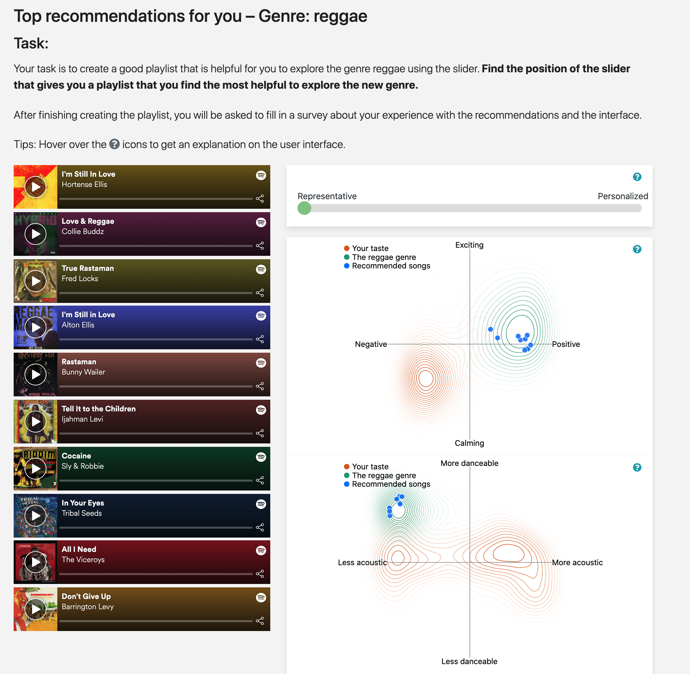
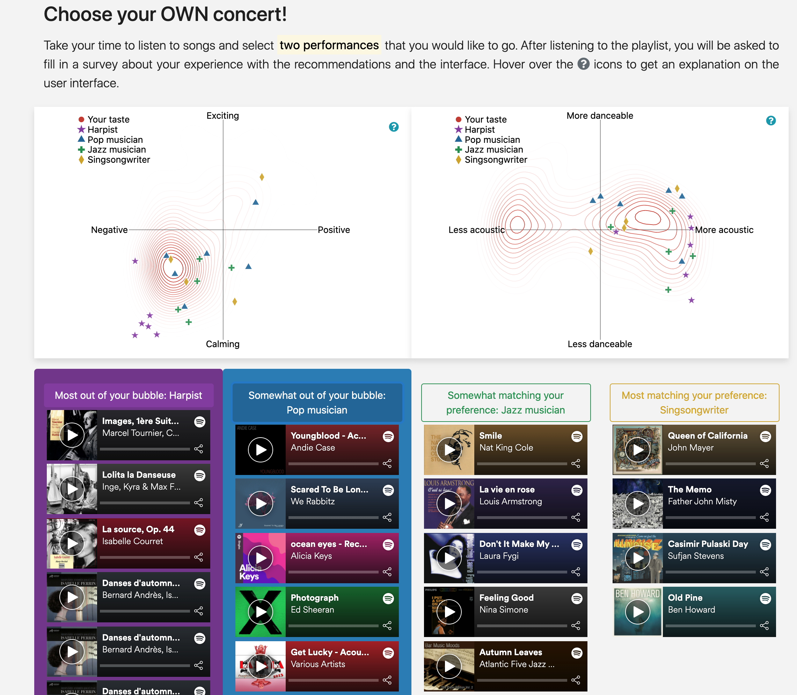

I am now a PhD Researcher of Jheronimus Academy of Data Science, and Human Technology Interaction Group, Eindhoven University of Technology in the Netherlands, under the supervision of Dr. Martijn Willemsen and Prof. Chris Snijder.
My research focus on recommender systems from user perspective, specifically I am interested in how recommender systems can serve the well-beings of users
(how recommender systems can support users to develop new tastes and preferences).
Previously, I received my Master’s degree of Computer Science from the Multimedia Computing Group, Delft University of Technology, The Netherlands.
I also like building all sorts of web applications. In my free time, I enjoy playing games and cooking. I am a fan of Animal Crossing. I am also a cat lover.
Research focus: recommender systems, personalization, user experience, machine learning, intelligent user interfaces,
human-computer interaction
Publications
Peer-reviewed Conference papers
- Yu Liang and Martijn C. Willemsen,
The role of preference consistency, defaults and musical expertise in users’ exploration behavior in a genre exploration recommender, Recsys’ 21 (Full paper + Demo)
[Slides]
[PDF]
- Yu Liang and Martijn C. Willemsen, Interactive Music Genre Exploration with Visualization and Mood Control, IUI' 21 (Full paper)
[Slides]
[PDF]
- Yu Liang, Recommender system for developing new preferences and goal, Recsys’ 19 (Doctor symposium)
[PDF]
- Yu Liang, Personalized recommendations for music genre exploration, UMAP' 19 (Full paper)
[PDF]
Workshop papers
- Sophia Hadash, Yu Liang, and Martijn C Willemsen,
How playlist evaluation compares to track evaluations in music recommender systems, Recsys’19 (IntRS Workshop)
[PDF]
- Yu Liang, Babak Loni and Martha Larson, CLEF NewsREEL 2017: contextual bandit news recommendation, CLEF’ 17 (NewsREEL)
[PDF]
Master thesis
- An ensemble approach for news recommendation based on contextual bandit algorithms, supervised by Prof. Martha Larson, MSc in Computer Science, 2017
[PDF]
Showcases and Demos

Music Genre Exploration
The interactive music genre exploration app is designed to support users explore new music genres based on their Spotify listening history, with nudging designed to motivate users' exploration from their current preferences. The tool also allows users to adjust recommendations themselves and improves transparency through visualizations

Musical Performance Exploration for Jads Musical Night (Live Concert)
Sometimes, it is hard for people to choose performances from a Live Concert, with the musical style that they are not familiar with. The Musical Performance Exploration app is designed to help people find their preferred live musical performance based on their Spotify listening history, with nudging designed to motivate people's exploration from their comfort zone. Similar to the music genre exploration app, this app also improves transparency through visualizations.